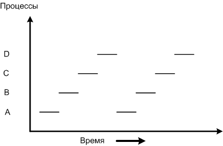
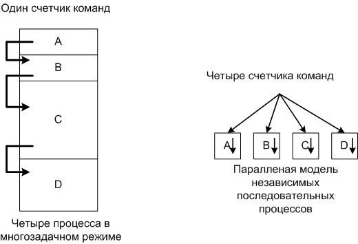
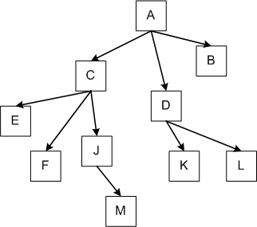
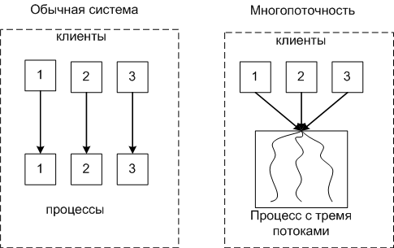

1 Многозадачность
Понятие многозадачности
Многозадачность (multitasking), — это способ организации вычислительного процесса, при котором на одном процессоре попеременно выполняются сразу несколько программ. Эти программы совместно используют не только процессор, но и другие ресурсы компьютера: оперативную и внешнюю память, устройства ввода-вывода, данные. Мультипрограммирование призвано повысить эффективность использования вычислительной системы.
ОС делятся на несколько типов по режиму многозадачности:
- системы пакетной обработки;
- системы разделения времениж
- системы реального времени.
1.1 Пакетная обработка
Системы пакетной обработки предназначались для решения задач в основном вычислительного характера, не требующих быстрого получения результатов. Главной целью и критерием эффективности систем пакетной обработки является максимальная пропускная способность, то есть решение максимального числа задач в единицу времени.
- В начале работы формируется пакет заданий, каждое задание содержит требование к системным ресурсам;
- из этого пакета заданий формируется мультипрограммная смесь, то есть множество одновременно выполняемых задач. Для одновременного выполнения выбираются задачи, предъявляющие разные требования к ресурсам, так, чтобы обеспечивалась сбалансированная загрузка всех устройств вычислительной машины.
Например, в мультипрограммной смеси желательно одновременное присутствие вычислительных задач и задач с интенсивным вводом-выводом. Таким образом, выбор нового задания из пакета заданий зависит от внутренней ситуации, складывающейся в системе, то есть выбирается «выгодное» задание. Следовательно, в вычислительных системах, работающих под управлением пакетных ОС, невозможно гарантировать выполнение того или иного задания в течение определенного периода времени.
Один из способов совмещения вычислений с операциями ввода-вывода реализуется в компьютерах, в которых внешние устройства управляются не процессором ввода-вывода, а контроллерами.
Каждое внешнее устройство (или группа внешних устройств одного типа) имеет свой собственный контроллер, который автономно отрабатывает команды, поступающие от центрального процессора.
При этом контроллер и центральный процессор работают асинхронно. Поскольку многие внешние устройства включают электромеханические узлы, контроллер выполняет свои команды управления устройствами существенно медленнее, чем центральный процессор — свои. Это обстоятельство используется для организации параллельного выполнения вычислений и операций ввода-вывода: в промежутке между передачей команд, контроллеру центральный процессор может выполнять вычисления.
Контроллер может сообщить центральному процессору о том, что он готов принять следующую команду, сигналом прерывания либо центральный процессор узнает об этом, периодически опрашивая состояние контроллера.
В системах пакетной обработки переключение процессора с выполнения одной задачи на выполнение другой происходит по инициативе самой активной задачи, например, когда она отказывается от процессора из-за необходимости выполнить операцию ввода-вывода. Поэтому существует высокая вероятность того, что одна задача может надолго занять процессор и выполнение интерактивных задач станет невозможным.
Взаимодействие пользователя с вычислительной машиной, на которой установлена система пакетной обработки, сводится к тому, что он приносит задание, отдает его диспетчеру-оператору, а в конце дня после выполнения всего пакета заданий получает результат.
Очевидно, что такой порядок повышает эффективность функционирования аппаратуры, но снижает эффективность работы пользователя.
1.2 Разделение времени
В системах разделения времени пользователям (или одному пользователю) предоставляется возможность интерактивной работы сразу с несколькими приложениями. Для этого каждое приложение должно регулярно получать возможность «общения» с пользователем. Понятно, что в пакетных системах возможности диалога пользователя с приложением весьма ограничены.
В системах разделения времени эта проблема решается за счет того, что ОС принудительно периодически приостанавливает приложения, не дожидаясь, когда они добровольно освободят процессор. Всем приложениям попеременно выделяется квант процессорного времени, таким образом пользователи, запустившие программы на выполнение, получают возможность поддерживать с ними диалог.
Системы разделения времени призваны исправить основной недостаток систем пакетной обработки — изоляцию пользователя-программиста от процесса выполнения его задач. Каждому пользователю в этом случае предоставляется терминал, с которого он может вести диалог со своей программой. Так как в системах разделения времени каждой задаче выделяется только квант процессорного времени, ни одна задача не занимает процессор надолго и время ответа оказывается приемлемым. Если квант выбран достаточно небольшим, то у всех пользователей, одновременно работающих на одной и той же машине, складывается впечатление, что каждый из них единолично использует машину.
Системы разделения времени обладают меньшей пропускной способностью, чем системы пакетной обработки, так как на выполнение принимается каждая запущенная пользователем задача, а не та, которая «выгодна» системе.
Производительность системы снижается из-за возросших накладных расходов вычислительной мощности на более частое переключение процессора с задачи на задачу. Это вполне соответствует тому, что критерием эффективности систем разделения времени является не максимальная пропускная способность, а удобство и эффективность работы пользователя.
Вместе с тем мультипрограммное выполнение интерактивных приложений повышает и пропускную способность компьютера (пусть и не в такой степени, как пакетные системы). Аппаратура загружается лучше, поскольку в то время, пока одно приложение ждет сообщения пользователя, другие приложения могут обрабатываться процессором.
1.3 Реальное время
В системах реального времени мультипрограммная смесь представляет собой фиксированный набор заранее разработанных программ, а выбор программы на выполнение осуществляется по прерываниям (исходя из текущего состояния объекта) или в соответствии с расписанием плановых работ.
Способность аппаратуры компьютера и ОС к быстрому ответу зависит в основном от скорости переключения с одной задачи на другую и, в частности, от скорости обработки сигналов прерывания. Если при возникновении прерывания процессор должен опросить сотни потенциальных источников прерывания, то реакция системы будет слишком медленной. Время обработки прерывания в системах реального времени часто определяет требования к классу процессора даже при небольшой его загрузке.
1.4 Мультипроцессорная обработка
Мультипроцессорная обработка — это способ организации вычислительного процесса в системах с несколькими процессорами, при котором несколько задач (процессов, потоков) могут одновременно выполняться на разных процессорах системы.
Мультипроцессорные системы часто характеризуют либо как симметричные, либо как несимметричные. При этом следует четко определять, к какому аспекту мультипроцессорной системы относится эта характеристика — к типу архитектуры или к способу организации вычислительного процесса.
Симметричная архитектура мультипроцессорной системы предполагает однородность всех процессоров и единообразие включения процессоров в общую схему мультипроцессорной системы. Традиционные симметричные мультипроцессорные конфигурации разделяют одну большую память между всеми процессорами.
Масштабируемость, или возможность наращивания числа процессоров, в симметричных системах ограничена вследствие того, что все они пользуются одной и той же оперативной памятью и, следовательно, должны располагаться в одном корпусе. Такая конструкция, называемая масштабируемой по вертикали, практически ограничивает число процессоров до четырех или восьми.
В асимметричной архитектуре разные процессоры могут отличаться как своими характеристиками (производительностью, надежностью, системой команд и т. д., вплоть до модели микропроцессора), так и функциональной ролью, которая поручается им в системе. Например, одни процессоры могут предназначаться для работы в качестве основных вычислителей, другие — для управления подсистемой ввода-вывода, третьи — еще для каких-то особых целей.
Масштабирование в асимметричной архитектуре реализуется иначе, чем в симметричной. Так как требование единого корпуса отсутствует, система может состоять из нескольких устройств, каждое из которых содержит один или несколько процессоров. Это масштабирование по горизонтали. Каждое такое устройство называется кластером, а вся мультипроцессорная система — кластерной.
Асимметричное мультипроцессирование является наиболее простым способом организации вычислительного процесса в системах с несколькими процессорами. Этот способ часто называют также «ведущий-ведомый».
Функционирование системы по принципу «ведущий-ведомый» предполагает выделение одного из процессоров в качестве «ведущего», на котором работает операционная система и который управляет всеми остальными «ведомыми» процессорами. То есть ведущий процессор берет на себя функции распределения задач и ресурсов, а ведомые процессоры работают только как обрабатывающие устройства и никаких действий по организации работы вычислительной системы не выполняют.
2 Процессы и потоки
2.1 Понятие процесса
Процесс (или по-другому, задача) - абстракция, описывающая выполняющуюся программу.
Для операционной системы процесс представляет собой единицу работы, заявку на потребление системных ресурсов.
Подсистема управления процессами планирует выполнение процессов, то есть распределяет процессорное время между несколькими одновременно существующими в системе процессами, а также занимается созданием и уничтожением процессов, обеспечивает процессы необходимыми системными ресурсами, поддерживает взаимодействие между процессами.
С каждым процессом связывается его адресное пространство, из которого он может читать и в которое он может писать данные.
Адресное пространство содержит:
- саму программу
- данные к программе
- стек программы
С каждым процессом связывается набор регистров, например:
- счетчика команд (в процессоре) - регистр в котором содержится адрес следующей, стоящей в очереди на выполнение команды. После того как команда выбрана из памяти, счетчик команд корректируется и указатель переходит к следующей команде.
- указатель стека
- и д.р.
На протяжении существования процесса его выполнение может быть многократно прервано и продолжено. Для того, чтобы возобновить выполнение процесса, необходимо восстановить состояние его операционной среды. Состояние операционной среды отображается состоянием регистров и программного счетчика, режимом работы процессора, указателями на открытые файлы, информацией о незавершенных операциях ввода-вывода, кодами ошибок выполняемых данным процессом системных вызовов и т.д. Эта информация называется контекстом процесса.
Кроме этого, операционной системе для реализации планирования процессов требуется дополнительная информация: идентификатор процесса, состояние процесса, данные о степени привилегированности процесса, место нахождения кодового сегмента и другая информация. В некоторых ОС (например, в ОС UNIX) информацию такого рода, используемую ОС для планирования процессов, называют дескриптором процесса.
Дескриптор процесса по сравнению с контекстом содержит более оперативную информацию, которая должна быть легко доступна подсистеме планирования процессов. Контекст процесса содержит менее актуальную информацию и используется операционной системой только после того, как принято решение о возобновлении прерванного процесса.
Очереди процессов представляют собой дескрипторы отдельных процессов, объединенные в списки. Таким образом, каждый дескриптор, кроме всего прочего, содержит по крайней мере один указатель на другой дескриптор, соседствующий с ним в очереди. Такая организация очередей позволяет легко их переупорядочивать, включать и исключать процессы, переводить процессы из одного состояния в другое.
Программный код только тогда начнет выполняться, когда для него операционной системой будет создан процесс. Создать процесс - это значит:
- создать информационные структуры, описывающие данный процесс, то есть его дескриптор и контекст;
- включить дескриптор нового процесса в очередь готовых процессов;
- загрузить кодовый сегмент процесса в оперативную память или в область свопинга.
2.2 Модель процесса
В многозадачной системе реальный процессор переключается с процесса на процесс, но для упрощения модели рассматривается набор процессов, идущих параллельно (псевдопараллельно).
Рассмотрим схему с четырьмя работающими программами.

В каждый момент времени активен только один процесс
Справа представлены параллельно работающие процессы, каждый со своим счетчиком команд. Разумеется, на самом деле существует только один физический счетчик команд, в который загружается логический счетчик команд текущего процесса. Когда время, отведенное текущему процессу, заканчивается, физический счетчик команд сохраняется в памяти, в логическом счетчике команд процесса.
2.3 Иерархия процессов
В UNIX системах заложена жесткая иерархия процессов. Каждый новый процесс созданный системным вызовом fork, является дочерним к предыдущему процессу. Дочернему процессу достаются от родительского переменные, регистры и т.п. После вызова fork, как только родительские данные скопированы, последующие изменения в одном из процессов не влияют на другой, но процессы помнят о том, кто является родительским.
В UNIX существует прародитель всех процессов - процесс init.
Дерево процессов для систем UNIX
В Windows не существует понятия иерархии процессов. Хотя можно задать специальный маркер родительскому процессу, позволяющий контролировать дочерний процесс.
2.4 Понятие потока
Каждому процессу соответствует адресное пространство и одиночный поток исполняемых команд. В многопользовательских системах, при каждом обращении к одному и тому же сервису, приходится создавать новый процесс для обслуживания клиента. Это менее выгодно, чем создать квазипараллельный поток внутри этого процесса с одним адресным пространством.
Современные ОС предлагают механизм многопоточной обработки (multithreading). При этом вводится новая единица работы — поток выполнения, а понятие «процесс» в значительной степени меняет смысл. Понятию «поток» соответствует последовательный переход процессора от одной команды программы к другой. ОС распределяет процессорное время между потоками. Процессу ОС назначает адресное пространство и набор ресурсов, которые совместно используются всеми его потоками.
Сравнение многопоточной системы с однопоточной
С каждым потоком связывается:
- Счетчик выполнения команд
- Регистры для текущих переменных
- Стек
- Состояние
Потоки делят между собой элементы своего процесса:
- Адресное пространство
- Глобальные переменные
- Открытые файлы
- Таймеры
- Семафоры
- Статистическую информацию.
В остальном модель идентична модели процессов.
В POSIX и Windows есть поддержка потоков на уровне ядра.
В Linux есть новый системный вызов clone для создания потоков, отсутствующий во всех остальных версиях системы UNIX.
В POSIX есть новый системный вызов pthread_create для создания потоков.
В Windows есть новый системный вызов Createthread для создания потоков.
Преимущества использования потоков:
- Упрощение программы в некоторых случаях, за счет использования общего адресного пространства.
- Быстрота создания потока, по сравнению с процессом, примерно в 100 раз.
- Повышение производительности самой программы, т.к. есть возможность одновременно выполнять вычисления на процессоре и операцию ввода/вывода. Пример: текстовый редактор с тремя потоками может одновременно взаимодействовать с пользователем, форматировать текст и записывать на диск резервную копию.